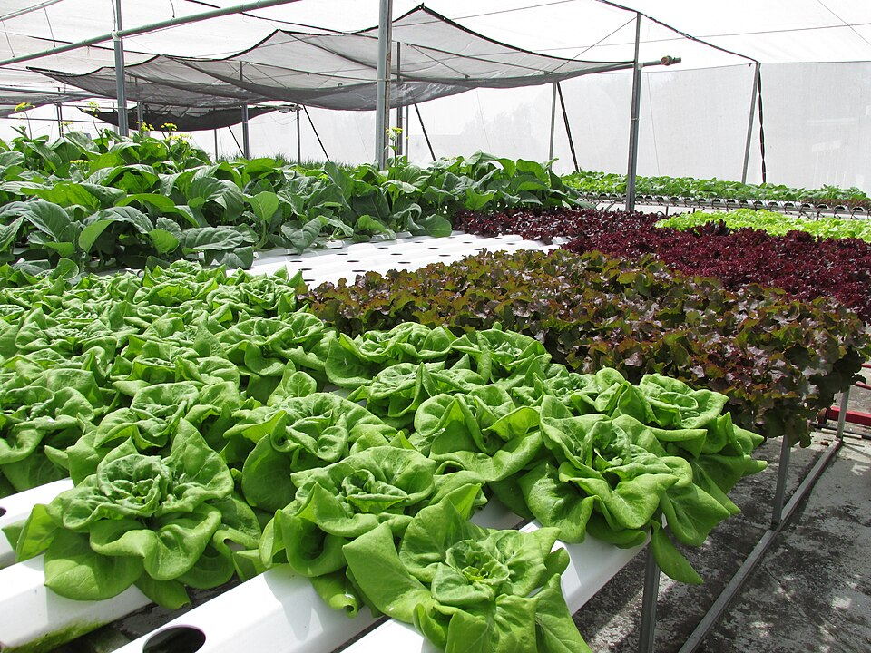

은 센서, 자동화 장치, 정보통신기술(ICT), 빅데이터, 인공지능(AI) 등을 활용하여 자동으로 농작물의 생장 환경을 관측하고, 원격으로 최적의 상태를 유지, 관리할 수 있는 농장이에요. 센서에서 토양의 수분 상태, 온도, 습도, 조도 등을 실시간으로 감지하고, 이를 바탕으로 생장 환경을 최적으로 관리해 품질과 생산량을 한층 더 높일 수 있어요.

사진: 온실에서 여러 품종의 상추를 키우는 모습 (Forest and Kim Starr, CC BY 3.0 US)
스마트팜에서는 농작물의 생산성을 높이기 위해 여러 환경요인을 조절해요. 왜 환경을 조절할까요? 광합성이 활발하게 일어나면 식물이 살아가는 데 필요한 양분이 많이 만들어져요. 그래서 광합성에 영향을 미치는 을 알면 농작물의 생산량을 늘리는 등 우리 생활에 도움을 줄 수 있어요.
스마트팜 조절실세 가지 조건을 조절하며 상추를 키워 봐요